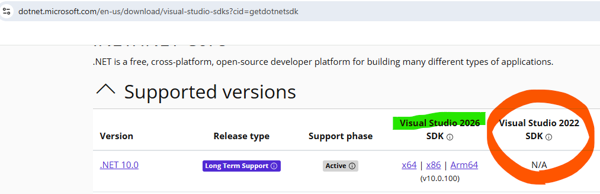
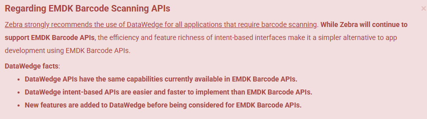

EMDK For Xamarin support for .NET 10
//Expert user has replied.
In .net maui I use the Symbol.XamarinEMDK nuget and inherit the EMDKManager.IEMDKListener in order to scan barcodes.
This works fine in .net 9.
However when updating to .NET 10 I am getting this error and the app crashes.
android.runtime.JavaProxyThrowable: [System.NotSupportedException]: Cannot create instance of type 'xxx': no Java peer type found.
Are there any plans on updating this to work with .net 10?
2 Replies
Hey Zack, appreciate your interest in Zebra EMDK for MAUI.
As a first check, are you aware you need to use VS2026 to target .NET10?

Although in a different EMDK context, see if this repo I've just posted can help with .NET and VS2026
ZebraDevs/OEMInfo-MAUI-NET10-VS2026: porting of legacy source code to the latest VS and NET versions
Finally, a reminder: we strongly suggest to use Datawedge for scanning
About EMDK For MAUI/Xamarin - TechDocs

Thanks for providing us with a feedback.
br
Nicola dzl.
Hi Nicola.
Thanks for the repo - it helped me get this working eventually. I had to make a few changes to my code for it to work however.
Basically I had 3 projects - one had the EMDK stuff and targeted net10 and net10-android
One was a view models project that only targeted net10 (and depended on emdk project)
The other was the maui project targeting net10 and net10 android depending on both projects.
Because the view models project was using net10 only, I think it used the net10 version of emdk project and gave the error.
This didn’t happen in net9 so not sure what has changed.